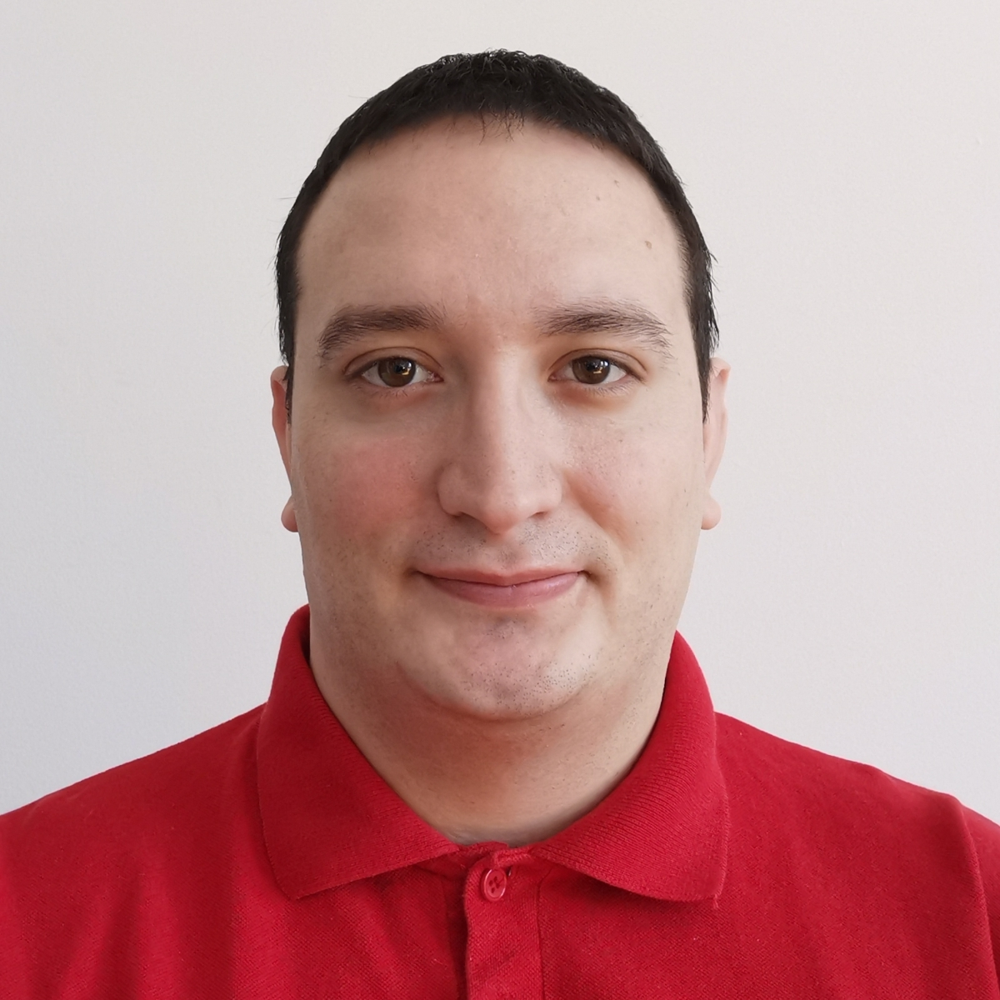

Nemanja Savic

Summary
I am a hardworking and goal-oriented individual with excellent proficiency in English.
Education
- Henry Wise Wood High School - Calgary, Alberta, Canada (2005-2007)
- "Svetozar Markovic" High School - Novi Sad, Serbia (2007-2009)
- Faculty of Law, University of Novi Sad - Novi Sad, Serbia (2009-)
Work Experience
Restaurant/bar waiter (March 2010 - June 2014)
- Worked as a wiater in various local restaurants and bars
- I possess good knowledge of the food industry.
- Excellent customer service and communication skills to support and build relationships with customers and staff members
Tourist guide (May 2015 - August 2018)
- Collaborated with various companies and individuals as a tourist guide, specializing in environmental, cuisine, and historical tours.
- Employed effective and diplomatic pitching techniques when engaging with diverse audiences.
- Offered comprehensive insights into destination details for tourists and vacationers.
- Demonstrated proficiency in quickly learning and retaining information provided by a script.
- Delivered engaging presentations on the historical significance of tour attractions, catering to both international and local tourists.
Online English Consultant (April 2017 - present)
- Taught over 4000 students within 6300 classes from various backgrounds and ages with different demands and levels ranging from beginners to fluent speakers with an average rating of 9.7 /10.
- Worked in direct sales with over 3000 classes (15 minute and 25min sessions)
- Taught over 4000 junior sessions; 4-18 years of age (25 minutes sessions)
- Taught over 1500 adult sessions (45 minute and 25 minutes sessions)
- Taught over 800 junior sessions; 4-18 years of age (45 minute classes 1 to 6 clients)
- Classes consist of 6 students (45 minute classes) or 1 to 2 students (25 minute classes)
- Attended over 100 various seminars and trainings (related to managing a large classroom, TPR, VR, gadgets, flash cards, motivation, technical issues, etc.) in order to expand my knowledge and become an even better teacher.
Skills
- Can speak two languages:
- Serbian - Native. Proficient
- English - Fluent. Indicates a high level of comfort using the language and can converse in the same manner as a native speaker (speaking, listening, writing, reading and grammar).
- Good knowledge of computers.
- Basic proficiency in photo editing, more specifically working in Adobe Photoshop. Constantly working on enhancing this skill.
- Great interpersonal skills and working in teams.
Awards and Certifications
- Fullcircle TEFL - a 120-hour advanced certificate in Teaching English as a Foreign Language (February 2020)
- Fullcircle TEYL - a 40-hour advanced certificate in Teaching English to Young Learners (February 2020)
- Premier TEFL - a 120-hour advanced TEFL course (March 2020)
Other